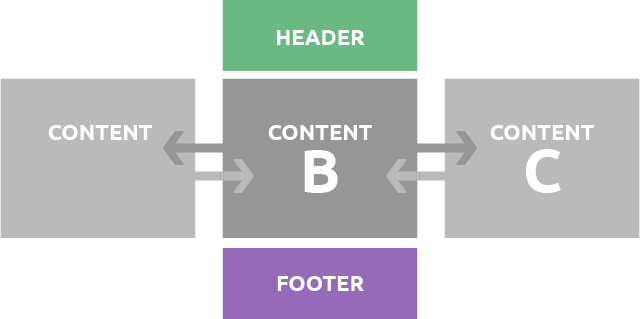

I would like to focus my studies on React.js. I've started to study a little bit during the break, and since our group decided to use React.js in our project, I would like to keep studying the usage of this library.
React.js is a library focused in create interfaces based on components. The main idea is that we can create components for each part of the website. These components may be bigger than others and may use smaller components inside. Although, the main structure of React.js is: components.
Other important point about React.js, is because these components can be reusable in other parts of the website, this way, you don’t need to code again the whole page if it uses the same structure. Also, depending the way the components are created, they can be used in “smart ways”, so It can be reusable for different purposes.
The name “React” itself give us a hint about one of its potentials: React.js can reacts to different states. With that functionality the component can be written with the methods to react to specific segments inside the component. It creates a very organized and controlled structure.
React.js it’s a library to create UI that’s is in ascension since 2014, the number of websites and products that’re based in React.js keeps increasing, as well as the number of job offers.
It’s important to mention that I don’t have a background in programming, and the language that I have more knowledge is JavaScript. Based on my research, React.js is not a hard library to learn, once its API is very short to learn.
These couple reasons make me choose to learn React.js for this term.
One of the (great) points of React.js is how it works. React.js creates a Virtual DOM, that way we don’t need to manipulate the changes directly in the DOM, but just in the Virtual DOM. Then, the React.js algorithms runs to make the comparison through differentiation, and just replace what was actually changed, instead of create a complete new DOM. I will explain in a few steps how it works:
I would like to create a simple system that can help me to understand the structure to create a web application. Therefore, I will create simple components to build main sections of a website: Header, Content and Footer. For each one of them, I will create a component. Also, I will create two additional content pages, to change them inside the page using buttons. In addition to that I want to add a textbox to change dynamically the text inside the content.
Throughout this process I can understand the basics of how to work with React.js and learn with the mistakes and some struggles during the process.
As I mentioned above, my prototype consist in a simple usage of components to understand the main funcionality of the React.js library. Because of that, the main public of my prototype is myself, as an student. Therefore, I am using myself, as a student, to create the User Stories, and the main outcome is to learn the library
Using the outcomes from the User Stories I can guide my study for the prototype, and compare if I could reach all the points I wanted in the User Stories.
In the previous weeks I could understand a bit more how to React.js works. I could create a little tutorial project that helped me to understand the main structure of this library. There're some points I went through during the last week:
In addition to that, I could start to create the main prototype based on my idea. I created the main project, as well as its components.
Overall I'm late based on my schedule. I needed to use some of my project time to other tasks. Because of that, I'm changing some of my tasks for other subjects to another week, so I will have enough time to finish the prototype in time.
Above you have access to my first prototype based on ReactJS. Work with that was great experience. ReactJS give me a lot o control over each detail in my website. I'm excited (and a little bit afraid) to go to the next step and mix my fresh new knowledge on ReactJS with the group project.
Now that I know the basics of ReactJS, I am able to focus a bit more on the Term 3 Project. Since a never mention about this project in my blog, I'll give a brief explanation below.
Essentially, it's a platform where tenants could create their rental resumes to apply for listed properties. With this knowledge in hands, our system's algorithms generate a Tenant Risk Score that's provided to landlords and real estate agencies, where they can easily screen through many applications for a particular property, using data visualization features. They also can actively seek potential tenants in our database, using valuable criteria such as neighborhoods of interest, maximum budget, overall tenant risk score or even more detailed and customized risk assessments, for example, property damage risk.
Text extracted from the Project Building Template.
First step, work with the user stories! Starting from this step, I can have a really good idea about what is important and what should be focused in our web application, so I can plan the user experience through the pages, as well as the structure of the site. I believe I still need to go deeper in some points of the user stories, but for a first structure, it is already useful